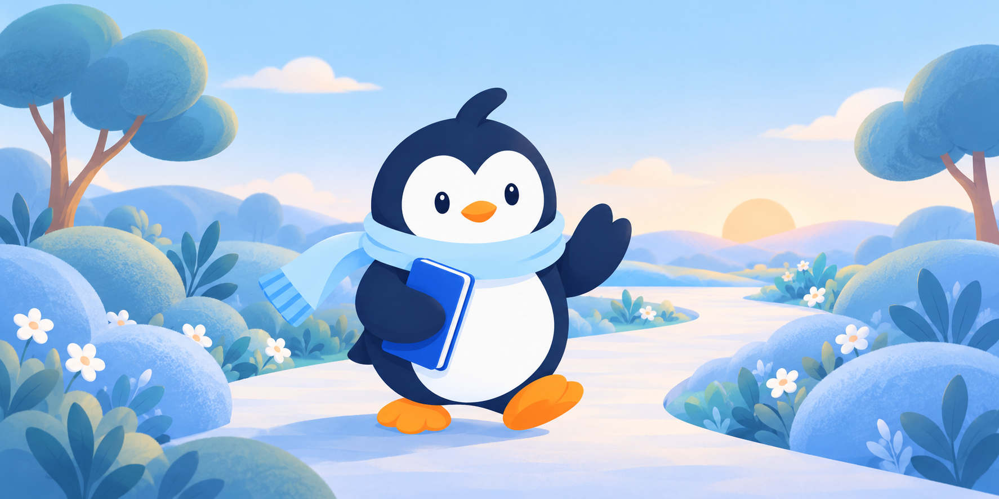
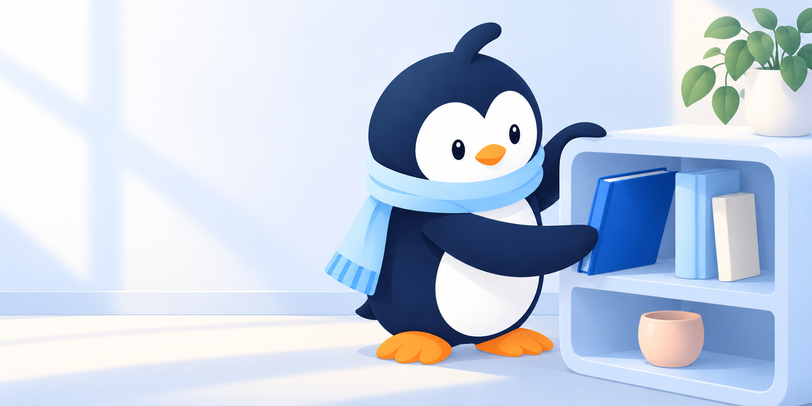

The name. Circle is the people around you. U is you, and university. The mark is Pingu's face: the character used across the app, reduced to a form that reads at 24 px.
Kept: the name, the blue, the three tabs, and on-device storage. Changed: one character instead of two, a warmer palette, and less text on every screen.
 23 Oct · Brand board
23 Oct · Brand board 24 Oct · Character poses
24 Oct · Character poses 26 Oct · Feeling portraits
26 Oct · Feeling portraits



Moodboard